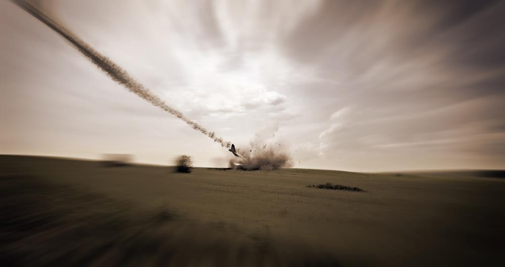
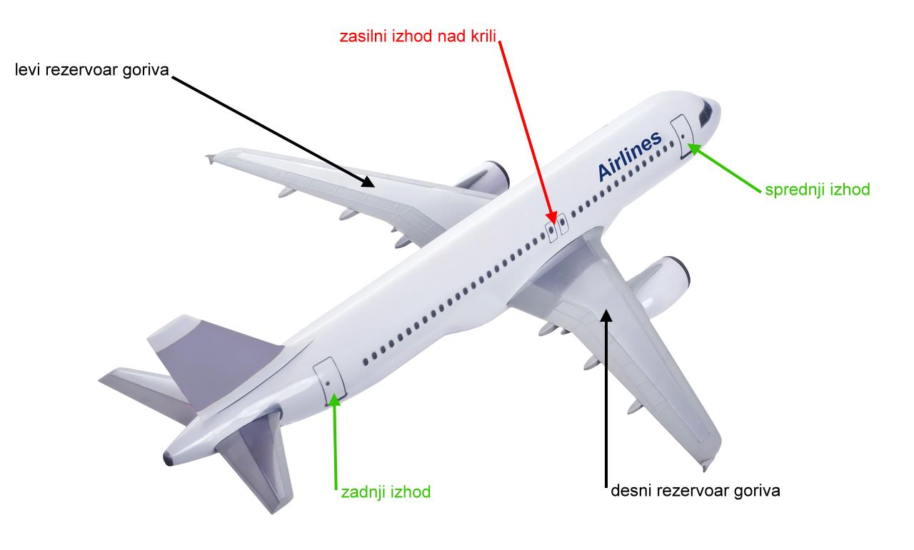
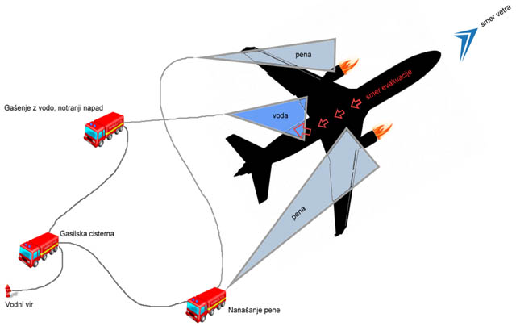

POSREDOVANJE GASILCEV V (VEČJI) LETALSKI NESREČI

Vir: http://www.adria.si/
Ključne naloge
Naloge gašenja in reševanja v letalu ali na letališču skladno z načrti zaščite in reševanja posameznega letališča opravljajo gasilske službe letališč, ki so usposobljene za gašenje in reševanje iz posameznih tipov letal, in gasilske enote širšega pomena skupaj s pristojnimi gasilskimi društvi.
Ključne naloge gasilskih enot pri letalski nesreči so:
- lokalizacija nesreče, iskanje zrakoplova
- gašenje požarov
- reševanje ukleščenih in drugih potnikov
- pomoč pri prenosu ponesrečencev s kraja nesreče in s težje dostopnih območij
- pomoč pri pripravi ponesrečencev za nadaljnji transport
- po potrebi reševanje na vodi in iz vode
- po potrebi reševanje iz ruševin
- nudenje prve pomoči in druge splošne reševalne naloge
Za gašenje in reševanje na težko dostopnih območjih se lahko sile in sredstva za reševanje do kraja nesreče pripeljejo tudi s helikopterjem policije ali slovenske vojske. Pri približevanju na kraj nesreče moramo biti še posebno pozorni na morebitne ponesrečence, ki bi bili v okolici nezgode, zlasti če se približujemo z vozilom. Paziti je treba tudi na razbitine in morebitne rotacijske mehanske dele.
Pristop do nesreče, zavarovanje kraja
Gasilci z nameščeno osebno zaščitno opremo v kombinaciji z izolirnim dihalnim aparatom do nesreče zaradi velike nevarnosti – požara/eksplozije, pogonskega goriva letala, kerozina – dostopamo do maksimalno 50 metrov od letala. Prva enota na mestu mora takoj začeti nanos težke pene na krila in pod njih, na mesta v okolici motorjev in pod letalo. V kolikor implementacija pene ni mogoča, lahko gasimo z vodnimi topovi ali B-ročniki, z uporabo razpršenega curka. Pozor! Uporaba razpršene vode za gašenje požara mogoče ne bo učinkovita zaradi zelo nizke temperature vrelišča kerozina. Upoštevati moramo, da lahko ogenj prodre v notranjost letala skozi trup v zgolj 60 sekundah. Odeja s peno mora biti neprestano nadzirana – nanos pene/hlajenje se ne sme prenehati, vsaj dve skupini gasilcev morata biti vedno ob ročnikih, da lahko takoj ukrepata ob morebitnem izbruhu požara. Pozor! Pri nanašanju pene moramo biti pazljivi, da je ne nanašamo v polnem curku neposredno v razlito gorivo ali obstoječi nanos pene, saj s tem nanos razbijemo.
Zavarovanje notranjosti letala
Gasilci imajo hkrati nalogo, da čim prej vstopijo v letalo z linijo – če je le možno, skozi novo odprtino, da ne zaprejo evakuacijskih poti potnikom. Za izdelavo odprtin lahko uporabimo žage, razpirala, škarje, hidravlične cilindre ipd. Izogibati se skušamo orodju, ki povzroča iskrenje. Poleg previdnosti pri uporabi orodja moramo paziti na prerez električnih vodov, ki največkrat potekajo ob spodnji in zgornji stranici trupa letala, saj lahko poškodba le-teh zaradi nizke vnetljivosti kerozina hitro povzroči požar. Posebno previdnost moramo nameniti preprečitvi potencialnim iskram in njihov stik z vnetljivim gorivom. Uporabljati je treba zaščitne prevleke oziroma se prepričati, da delamo v območju, kjer je nanos pene že zadovoljiva zaščita. V najkrajšem možnem času je treba vzpostaviti prezračevanje z ventilatorji, da v letalu vzpostavimo nadtlak in s tem zmanjšamo možnost vžiga v notranjosti, če zagori na zunanjem delu letala. Za vstop v letalo in aplikacijo prezračevanja uporabimo dvo- ali tridelne ali stikalne lestve, odvisno od višine letala.
Evakuacija, reševanje
Evakuacijo začnemo izvajati šele, ko smo vzpostavili preventivno nanašanje pene ali ohlajanje rezervoarjev goriva in ko imamo v letalu svojo ekipo gasilcev. Če je potrebna pomoč pri evakuaciji v letalu, se uporabljajo prosti zasilni izhodi spredaj, nad krili ali zadaj. Opcijsko je lahko aktivirana tudi spustnica/tobogan. Evakuirali naj bi ponesrečence/udeležence v vseh smereh, v radiju 300 metrov od letala. Skladno z naravo dogodka opravimo hitri iznos ali postopno evakuacijo z imobilizacijo potnikov.

Slika: Zasilni izhodi in rezervoarji
Gašenje v primeru požara
Če zagori, moramo ogenj, podobno kot pri požarih v predorih, prioritetno pogasiti. Šele za lokalizacijo ali celostno pogasitvijo požara začnemo reševati ponesrečence. Ob gašenju z vodnimi topovi moramo čim prej vzpostaviti dotok vode v cisterno iz drugih virov. Na letališčih je po navadi več bazenov/ploščadi (primer: Letališče Jožeta Pučnika ima na voljo bazen s 300 m3 vode, hidrantno mrežo okoli ploščadi ter črpališče z možnostjo črpanja 6 m3/min.). V primeru nesreče zrakoplova zunaj letaliških con pa je treba v najkrajšem možnem času priskrbeti dodatno oskrbo vode.
Oglejmo si primer napada z repa v smeri vetra, napad z vodo in vstop v letalo, napad s peno:

S slike je razviden osnovni taktični pristop ob nesreči:
1. vozilo, namenjeno samo nanašanju pene
2. vozilo, namenjeno vstopu v letalo, gašenju z notranje strani, prezračevanju (minimalno dve skupini)
3. gasilsko vozilo – cisterna, ki skrbi za nemoteno oskrbo z vodo
V omenjenem ožjem območju v začetni fazi ne sme biti nobeno drugo reševalno vozilo, saj se moramo konstantno zavedati nevarnosti eksplozije.
ZAKLJUČEK
Ob nesreči potniškega letala je mogoče pričakovati večje število mrtvih ali težko poškodovanih. Zato morajo predvsem vodje intervencij poleg posebne previdnosti upoštevati tudi standardne postopke ukrepanja pri množični nesreči, sektorizacijo, vodenje več enot/skupin in zahtevno logistiko. Ob morebitni najavi zasilnega pristanka ali ob nesreči z zrakoplovi je smotrno aktivirati in uporabiti vsa razpoložljiva sredstva, tako moštvo kot vozila, ter jih poslati na kraj dogodka, obenem pa se morajo vsi sodelujoči zavedati psihofizičnega napora, ki ga tako posredovanje prinaša. Upoštevajoč nevarnosti in postopke, navedene v tem sklopu, lahko gasilci kljub vsemu varneje in učinkoviteje ukrepamo v nesreči zrakoplova.